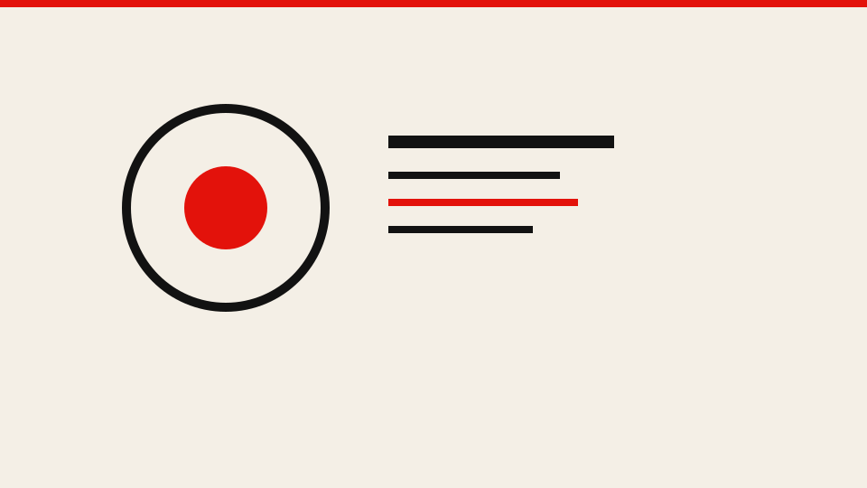
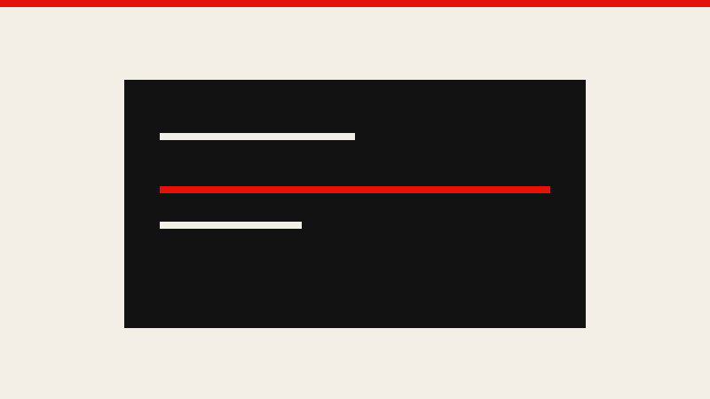
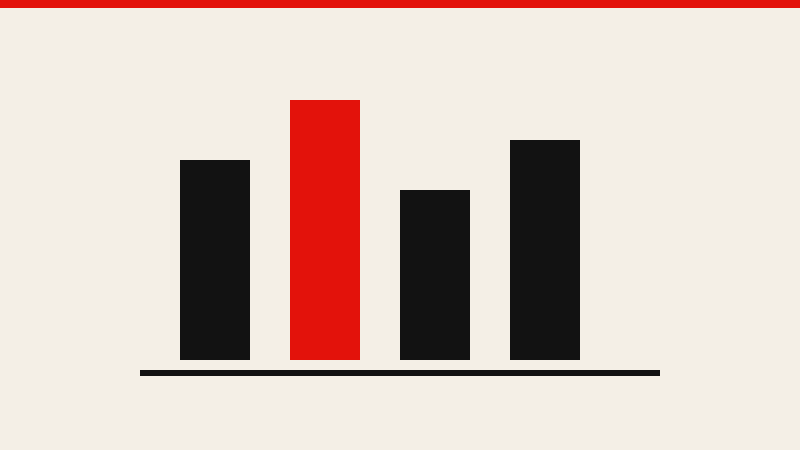

封面
OpenAI 因安全原因不发布 GPT-6.1 Astra
据 BBC 报道，OpenAI 宣布不会发布其最新模型 GPT-6.1 Astra，原因是安全方面未达标。该公司安全系统负责人 Saachi Jain …
摘记 · 不是官方媒体
2026年9月30日

封面
据 BBC 报道，OpenAI 宣布不会发布其最新模型 GPT-6.1 Astra，原因是安全方面未达标。该公司安全系统负责人 Saachi Jain …
更多报道



这里是近期人工智能新闻的摘记，不是官方媒体，也不代表任何实验室或政府。每篇只转述已核对过的公开报道，并给出原文链接。